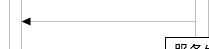

目前使用的论文作图工具有几种: gnuplot, Illustrator, matlab, matplotlib, Origin, Photoshop, R-ggplot, tikz, visio, Windows自带画图
gnuplot
开源, 图形清爽简洁, 需要编程思维
适用情况: 通用, 更适合Linux下作图
Illustrator
能会出复杂和绚丽的图表, 海报, 宣传画报等, 并且是矢量图形式. 当然学习难度也比较大, 把那些工具用熟练了不容易.
适用情况: 宣传画报, 视觉渲染
matlab绘图
MATLAB环境下实验结果的绘图, 类似的还有 Mathematica 绘图, Maple 绘图和 MathCAD 绘图.
matplotlib
Python环境下实验结果的绘图
Origin
科研用绘图软件, 仅支持Windows
适用情况: 数理化生实验
R-ggplot2
R语言广泛用于统计, ggplot2功能不如Python或者MATLAB全面
适用情况: R语言下绘图
tikz
LaTeX绘图, 矢量图形式
Visio
简易流程示意图. 它有丰富的图片库, 包括电路图库等. 并且与Office组件的兼容性较好。
适用情况: Windows下对作图精读要求不严格的情况
Windows自带画图
不要忽略了Windows自带的画图软件哦, 小时候这款软件陪伴了我们在家长办公室里的时光. 最快速的方法用来做最简单的图.
总结
其实上面的讨论有点类似于编程语言之争. 关键还是思路, 在心里的反应. 而不是画图软件, 没有思路的时候可以用纸笔或者画图板做出草图.
具体使用指南
Visio
连接线文本很方便，拖动连接线文本也会跟着移动。
但遇到过这样的问题，当背景不是白色的时候，连接线文本的背景却是白色，显得很突兀。想修改形状样式>填充>无填充，但修改的是连接线的属性。如何修改连接线文本背景为透明呢？
答：点击连接线>字体>文本块>文本背景>”纯色”改为”无”
连接线挤占变形
本来是直线连接：

过来一个形状后就挤压了原来连接线的位置：
解决办法： 将连接线设置为直线连接线，然后开发工具 > 保护 > 锁定x轴，y轴
Origin Pro
参见 https://billystudio.github.io/2021/05/28/2021-May-28th-OriginPro-with-examples/